Vordere Ständerwand
50 cm tief, vorne offen, vollständig um Center und Subwoofer mit Dämmmaterial gefüllt. Lautsprecher bündig eingebaut; Center mit 2–3 cm Abstand zur mikroperforierten Leinwand.
Privates Heimkino
Ein Raum, kompromisslos auf Mehrkanal-Kinoton ausgelegt. 24 Kanäle, Double Bass Array, vollflächig behandelte Akustik.
EintretenEclipse ist auf eine einzige Aufgabe optimiert: die bestmögliche Wiedergabe von Mehrkanal-Kinoton am Hörplatz. Stereo spielt keine Rolle — jeder Quadratmeter, jede Wandkonstruktion und jeder Lautsprecher dient diesem Ziel.
Der Hörplatz ist die erste Reihe. Sie ist die Referenz für jede akustische, elektrische und optische Entscheidung im Raum.
Zwei Stressless Reno L Sessel, symmetrisch links und rechts der Mittelachse. Bewusst kein Sitzplatz exakt mittig — Dirac ART misst die zwei realen Hörpositionen ein.
Vier Hollywood Zuhause Pasadena Sitze auf einem 45 cm hohen Podest (267 × 168 cm). Optimiert wird ausschließlich auf Reihe 1.
17 Lautsprecher in der Hauptebene und Decke, ergänzt um ein Double Bass Array mit 16 Subwoofern.
8 Subwoofer pro Wand, vorne wie hinten — Chassis: Scan-Speak 30W/4558T00. Vordere Ständerwand 50 cm tief, hintere 30 cm. Ankopplung über 3.000 Pa·s/m² Dämmung zwischen den Subwoofern, 10.000 Pa·s/m² zur Betonwand.
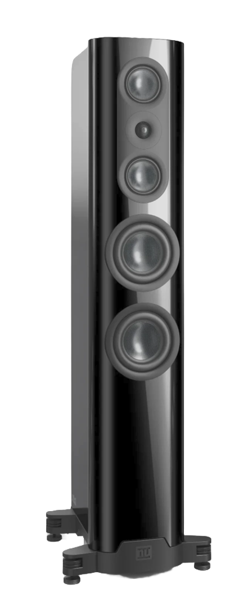
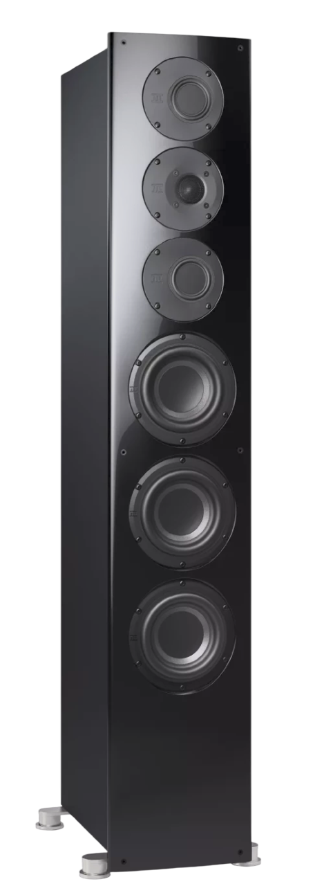
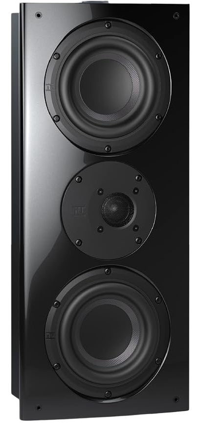
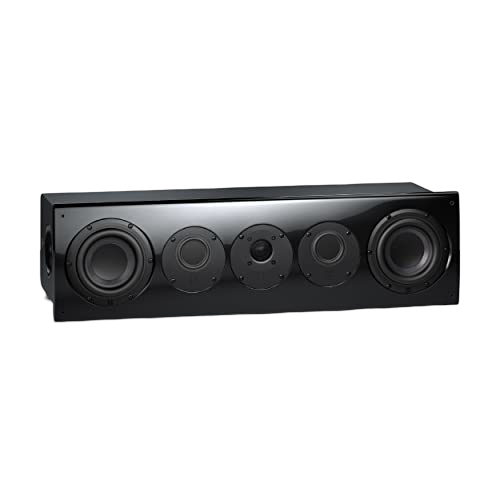
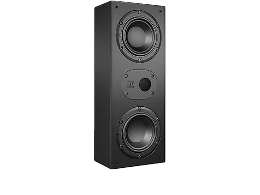
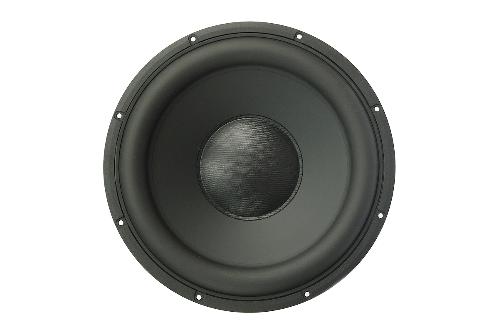
Jede Wand, die Decke und der Boden sind nach einem klaren akustischen Konzept aufgebaut: Absorber dort, wo Energie weg muss; Diffusor und Reflektor dort, wo sie erhalten bleiben soll.
50 cm tief, vorne offen, vollständig um Center und Subwoofer mit Dämmmaterial gefüllt. Lautsprecher bündig eingebaut; Center mit 2–3 cm Abstand zur mikroperforierten Leinwand.
Direkt vor der Front links und rechts: 120 × 120 × 20 cm, Ursa-Glaswolle, Unkrautvlies. Dahinter Front Wide, dann ein zweites 100 × 100 × 20 cm Element.
Hinter den Surrounds: 60 cm breite Vollholz-Slats (32–58 mm, 45 mm Tiefe). Reflektierend mit aufgebrochener Phase — Energieerhaltung im hinteren Halbraum, kein Diffusor. Auf Hörebene davor ein t.akustik Highline A1 Silver Spruce gegen direkte Rückreflektion.
Auf Höhe Reihe 2 seitlich 2D-Manhattan-Diffusoren aus EPS, 60 × 180 cm. An der Rückwand zwei 1D-Diffusoren à 100 × 50 × 10 cm zwischen den Subwoofern.
120 × 360 cm direkt vor dem Hörplatz. Erste Lage 10 cm dick auf dem Boden, danach 10 cm dick mit 10 cm Luft darunter. Material 6.000 Pa·s/m².
Vorne 100 cm angewinkelte 10-cm-Absorber. Anschließend 120 cm Erstreflektions-Absorber 20 cm dick (6.000 Pa·s/m²) über die volle Raumbreite. Ab Hörplatz 16 Module 2D-Diffusor, 5,76 m² durchgehend.
20 cm Teppich 120 cm Bodenabsorber 150 cm Teppich 190 cm Laminat
Verlauf von der Leinwand zur Rückwand.
Bodenabsorber und vordere Deckenfläche (260 cm) mit Adamantium Audio Dark Reference bespannt. Vor den Decken-Diffusoren sowie ab 100 cm an Seiten- und Rückwand: Adamantium Audio Invisible — akustisch transparent.
Eingemessen wird mit Dirac ART auf der Storm Audio ISP Elite MK2 (Storm-Audio-Zielkurven, Konfiguration nach Dirac-ART-Support). Erster Messpunkt exakt mittig zwischen den beiden Sesseln; danach jeweils acht Punkte rund um die zwei Hörplätze der ersten Reihe.
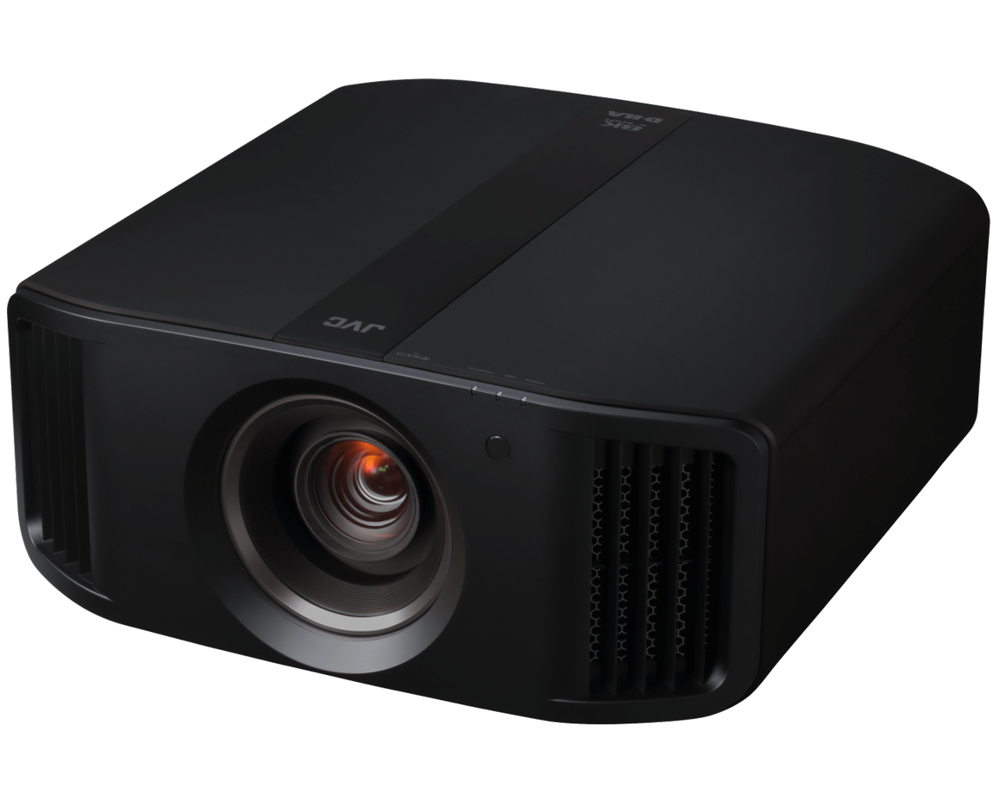
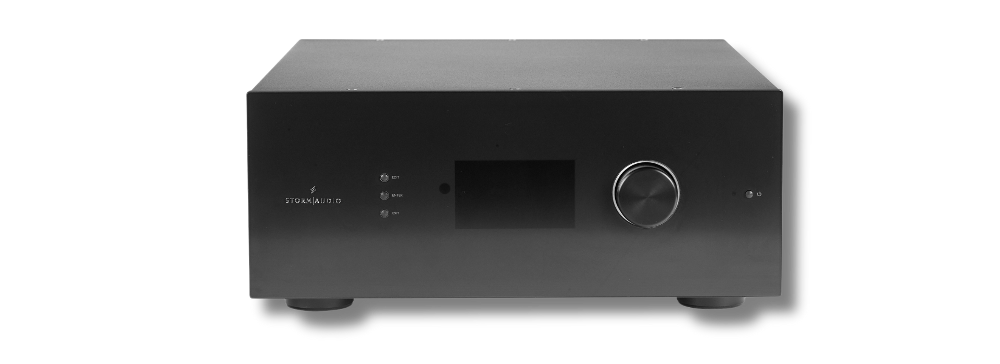
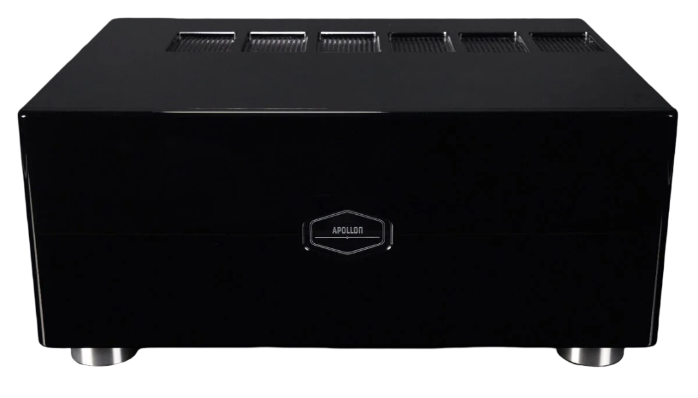
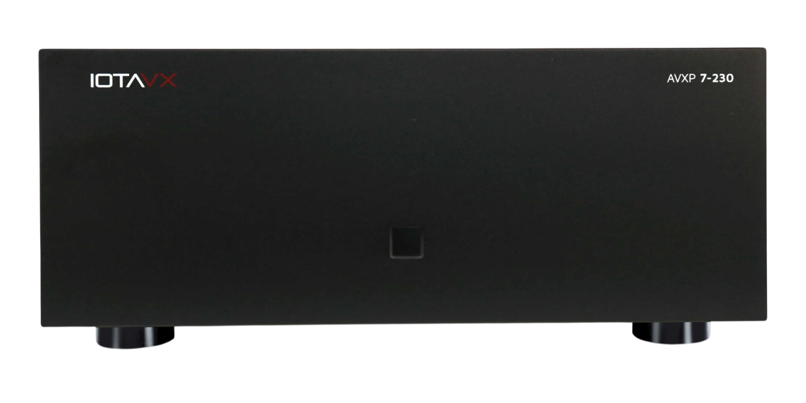

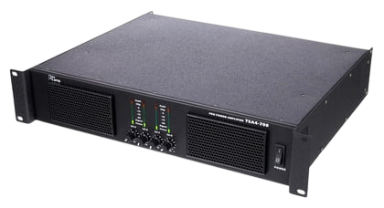
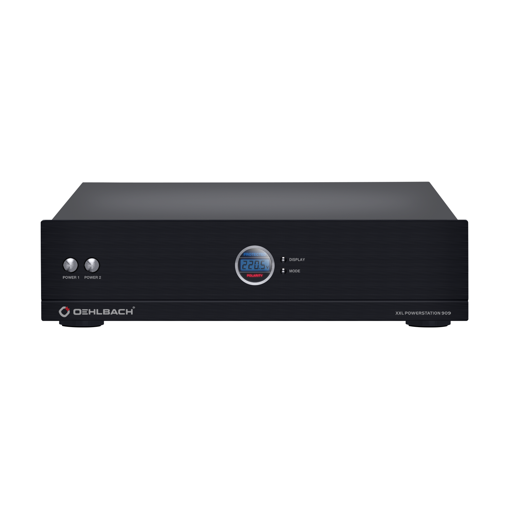
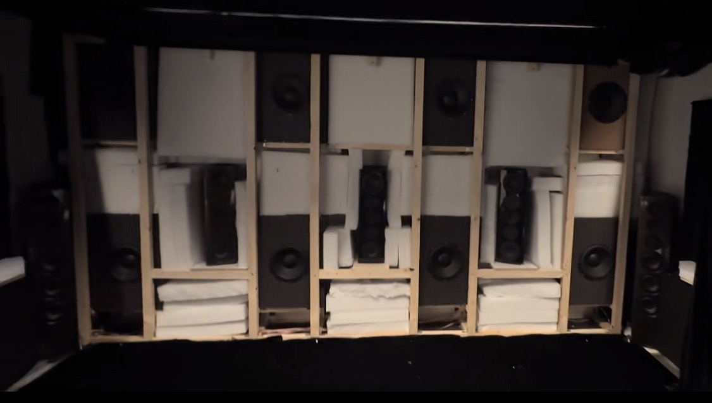